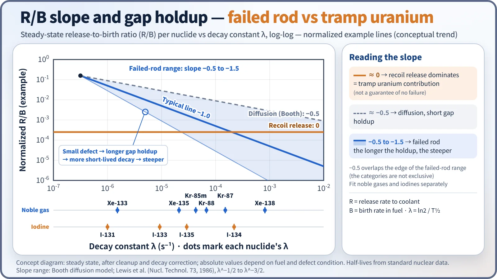
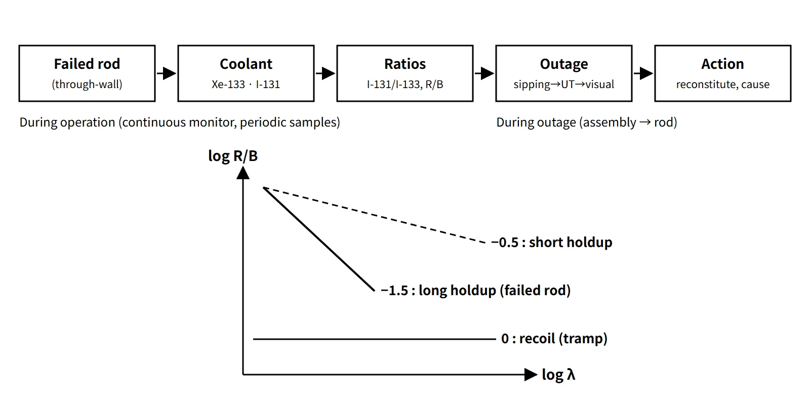

Fuel & Materials · C-FM-009
Fuel Integrity Monitoring (Fuel Failure Diagnosis) — Coolant Activity Indicators, Iodine Isotope Ratios, Sipping and UT
Coolant activity reveals failure onset, gap holdup and burnup; outage inspection narrows the search from assembly to rod.
Fuel integrity monitoring means measuring fission-product activity (noble gases and iodines) in the reactor coolant during operation to judge whether through-wall cladding defects have occurred and how large they are, and, during refueling, using sipping, ultrasonic and visual inspection to find the failed assemblies and rods and establish the cause.
It has two purposes. One is to confirm indirectly the condition of the first and second barriers, the pellet and the cladding, and keep coolant activity within the Technical Specification limits. The other is to find the cause of each failure and prevent recurrence.
Principle and mechanism
From the failed rod to the coolant
Once the cladding has a through-wall defect, fission gases and volatile nuclides that have moved from the pellet into the gap escape through the defect into the coolant. The path is diffusion in the pellet → holdup in the gap → passage through the defect → dilution and cleanup in the coolant. While the nuclides are held in the gap, a large part of the short-lived ones decays, so the nuclide mix that appears in the coolant itself tells you about the size and condition of the defect.
- Noble gases (Xe-133 5.25 d, Xe-135 9.14 h, Kr-85m 4.48 h, Kr-88 2.84 h): chemically inert, so they show a new failure earliest and most sensitively. The long-lived Xe-133 is the main indicator for failure detection.
- Iodines (I-131 8.02 d, I-133 20.8 h, I-134 52.5 min): part of the iodine is held in the gap as iodides and dissolves out when water enters. This is the nuclide group behind the dose criterion (DEI-131).
- Caesium (Cs-134/Cs-137): Cs-134 is produced by neutron capture in Cs-133, so the ratio of the two grows with burnup. It is used to estimate how many cycles the failed rod has been in the core.
Release-to-birth ratio (R/B) and its slope
Dividing each nuclide's release rate to the coolant, R, by its birth rate in the fuel, B, and plotting R/B against the decay constant λ on log-log axes lets you separate release mechanisms by the slope.
- Slope ≈ 0: recoil release dominates. This is the case when tramp uranium deposited on the outer cladding surfaces and elsewhere is in direct contact with the coolant. This background activity exists even without any failed rod.
- Slope ≈ −0.5: diffusion in the pellet (Booth model).
- Slope −0.5 to −1.5: failed rod. Gap holdup is added to diffusion; the smaller the defect, the longer the holdup, the more the short-lived nuclides decay and the steeper the slope.
The three categories overlap at −0.5, so they are not exclusive, and a slope of 0 does not guarantee that there is no failure. Steady-state data are corrected for cleanup and decay, and noble gases and iodines are regressed separately.

What the isotope ratios tell you
- I-131/I-133 ratio: as release from failed rods increases, the share of the longer-lived I-131 grows. By convention 0.1 or more is taken as a failure sign, but an operating-data study reports that 0.15 reduces false calls, so the value is judged against each plant's baseline.
- Xe-133/Xe-135 ratio: under the same operating and cleanup conditions it increases as the defect gets smaller and the holdup longer. A French PWR criterion, for example, is Xe-133 > 10⁶ Bq/kg, or Xe-133/Xe-135 > 0.9 together with Xe-133 > 1.85×10⁵ Bq/kg.
- Share of short-lived nuclides (I-134, Xe-138, Kr-87): a large share points to a tramp contribution or to fuel material washing out of an enlarged defect.
- Estimating the number of failed rods: the Xe-133 and I-131 release rates, after subtracting the tramp background, are divided by a reference release rate for one failed rod. This is done with analysis codes, and the uncertainty is large.
Iodine spike
During shutdown, depressurization or power changes, iodine accumulated in the gap of failed rods comes out all at once as water enters and washes it out, so the coolant iodine concentration jumps by a factor of several to several tens. This is not a new failure but the release of inventory from existing failed rods; even so, the size of the spike is a good clue to whether failures exist and how large they are. Caesium release also increases, which is used to estimate the burnup of the failed rod.
What it means in a plant
Monitoring during operation
- Continuous monitoring: a radiation monitor on the chemical and volume control system (CVCS) letdown line (failed-fuel monitor) shows the gross-gamma trend and raises alarms.
- Periodic sample analysis: coolant samples are analyzed by gamma spectrometry for nuclide concentrations, DEI-131 and DEX-133, and isotope ratios. When failure signs appear, the analysis frequency is increased.
- Monitoring for secondary degradation: a stepwise rise in iodines and noble gases, or signals from actinides (Np-239) or delayed neutrons, means the defect is growing and fuel material is being washed out. A typical case is secondary hydriding, where steam inside the rod after the initial failure hydrides the cladding and grows the defect into an axial crack. Operating measures such as limits on the rate of power change are then considered.
- In BWRs, a power suppression test, moving control rods to change the local power and watching the response, is sometimes used to narrow down the failure location; its use in PWRs is limited.
![Diagnosis map: during operation, letdown coolant goes to a continuous gross-gamma radiation monitor and periodic gamma spectrometry, with a table of six indicators (Xe-133 trend, I-131/I-133, Xe-133/Xe-135, I-134 and Xe-138 share, Cs-134/Cs-137, iodine spike) and the STS example DEI-131 at most 1.0 microcurie per gram, above 60 leading to MODE 3 within 6 hours and MODE 5 within 36 hours; during outage, five steps: in-mast sipping, confirmatory sipping, ultrasonic testing, visual and eddy current inspection, disposition, beside an underwater fuel assembly inspection scene](../../assets/images/concepts/c-fm-009-fuel-integrity-monitoring/fig2-diagnosis-map.webp)
Inspection during refueling
- In-mast sipping: as the assembly is lifted during unloading, the water pressure drops and gas released from failed rods (Xe-133, Kr-85) is collected at the mast, screening out the failed assemblies.
- Confirmatory sipping (if needed): a suspect assembly is isolated in a can or vacuum sipping unit, heated and depressurized, and confirmed by gaseous and dissolved nuclides. The two kinds of sipping are not a mandatory sequence.
- Ultrasonic testing (UT): water that has entered a rod is detected ultrasonically to identify the failed rod. The defect location itself is confirmed by visual and other means.
- Eddy current and visual inspection: underwater cameras and borescopes check for fretting wear, debris, crud and oxide layers, and eddy current measures oxide and wear depth.
- Disposition: reconstitution (replacing the failed rod with a dummy rod), exclusion from reload, and, where necessary, hot-cell post-irradiation examination to confirm the cause.
Failure causes and the "zero defects" goal
The largest cause of PWR failures is grid-to-rod fretting (GTRF) (about 40 % of PWR failures worldwide in 2006–2010, as cited in the literature), followed by debris fretting, PCI, crud and corrosion (including CILC) and manufacturing defects. In the 1970s the main causes were primary hydriding and cladding collapse from densification. In 2005–2006 the US industry, led by INPO, set the goal "Zero by 2010", and EPRI issued five fuel reliability guidelines: fuel surveillance and inspection, PWR corrosion and crud, BWR corrosion and crud, PCI, and GTRF. In 2010 EPRI reported that 90 % of US plants were operating defect-free (70 % in 2007).
Regulatory and design criteria
The criteria below are examples from the United States (US NRC), together with international industry and IAEA guidance.
| Basis | Key point |
|---|---|
| NUREG-1431/1432 STS LCO 3.4.16 | DEI-131 ≤ 1.0 µCi/g (bracketed example value), DEX-133 ≤ plant-specific value. If exceeded, verify ≤ 60 µCi/g every 4 hours and restore within 48 hours; above 60 µCi/g, MODE 3 within 6 hours and MODE 5 within 36 hours |
| TSTF-490 (approved 2006) | Deleted the old gross specific activity criterion 100/Ē and introduced DEX-133 |
| RG 1.183 | Iodine spike for dose analysis: pre-accident 60 µCi/g; accident-initiated spike 500 times for MSLB and 335 times for SGTR |
| 10 CFR 50 App. A GDC 10, SRP 4.2 | SAFDLs not exceeded in normal operation and AOOs; prevention of fuel system damage |
| EPRI fuel reliability guidelines, IAEA NF-T-2.1 (2010) and NF-T-2.5 (2019) | Monitoring and inspection practice, worldwide failure statistics |
Plants that have adopted TSTF-490 use DEX-133 instead of the old gross specific activity criterion 100/Ē. The IAEA failure statistics have since been updated to cover 2006–2015.
Easily confused pairs
| Failed-rod release | Tramp uranium | Activated corrosion products | |
|---|---|---|---|
| Typical nuclides | Xe-133, I-131, Cs | Short-lived I-134, Xe-138, etc. | Co-58, Co-60, Fe-59 |
| R/B slope | −0.5 to −1.5 | ≈ 0 (recoil) | Not applicable |
| Meaning | Through-wall cladding defect | Background (not a failure) | Crud and radiation levels |
| Spike | Large on shutdown and depressurization | Small | Crud burst (a separate phenomenon) |
An iodine spike must also be distinguished from the onset of a failure. A spike is the release of inventory from existing failed rods; a new failure is recognized by a stepwise rise in noble gases at steady power.
Key points at a glance
- Definition: monitor through-wall cladding defects with coolant fission-product activity; during outages, locate failed rods and establish the cause by inspection.
- Noble gases: Xe-133 (5.25 d), Kr-85m, Kr-88 → early detection of failure.
- Iodines: I-131/I-133 ratio (≥ 0.1 by convention) → contribution of failed-rod release; DEI-131.
- R/B slope: ≈ 0 recoil (tramp), −0.5 diffusion, −0.5 to −1.5 failed rod (steeper with longer holdup).
- Tramp uranium: larger share of short-lived nuclides such as I-134 → subtract as background.
- Iodine spike: factor of several to several tens on shutdown or depressurization; Cs-134/137 ratio gives burnup.
- Secondary degradation: stepwise increase, Np-239 → limit power changes.
- T/S: DEI-131 1.0 µCi/g (STS example); shutdown above 60 µCi/g; DEX-133.
- During outage: sipping (confirmatory if needed) → UT (water-logged rod) → visual and eddy current → reconstitution and PIE.
- Causes and goal: GTRF, debris, PCI, crud; Zero by 2010; EPRI guidelines.
